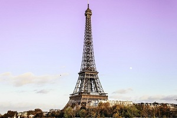
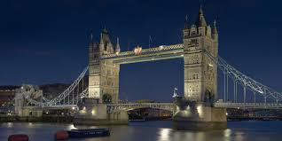
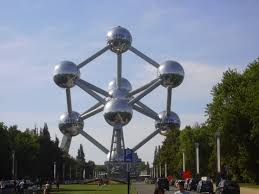
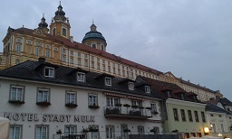
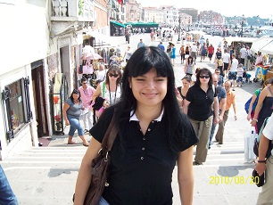
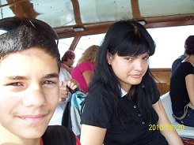
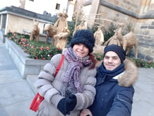
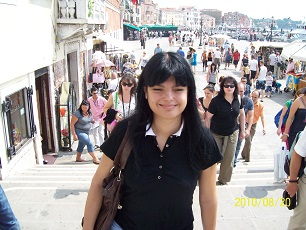
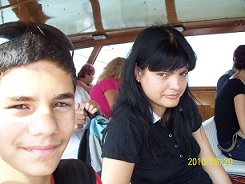
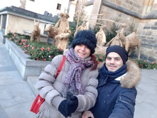

Oli
Nevem: Beh Olívia
Hol? Budapesten
Mikor? 1979.09.06-án (Jó régen :)
email: olivia.beh@pr.hu
Utazásaim Európában
Mindig szerettem utazni. Egy időben sok európai városban jártam. A teljesség igénye nélkül: Párizs, London, Amszterdam, Brüsszel, Krakkó, Zakopane, Róma, Velence, Verona, Padova, Prága stb.
Volt egy időszak az életemben, amikor minden nyáron az öcsémmel elutaztunk pár napra. Az öcsém 16 évvel fiatalabb nálam, tehát még gyerek volt. Általában Magyarországon belül utazgattunk, de néha beesett 1-2 rövidebb külföldi út is :)
2017-ben azt kaptam az öcsémtől születésnapomra, hogy decemberben együtt elutaztunk Prágába a régi szép idők emlékére.
    





Mivel Európán kívül még nem jártam, legközelebb egy világkörüli hajóútra szeretnék menni, természetesen az álomhajónkkal :).